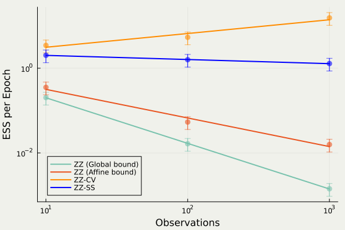

Zig-Zag サンプラー
物理のくびきを超える MCMC
7/25/2024
1 Zig-Zag サンプラー
A Blog Entry on Bayesian Computation by an Applied Mathematician
$$
$$
1.1 他手法との違い：連続かつ非対称なダイナミクス
対象分布：標準 Cauchy 分布 f(x)=\frac{1}{\pi\sigma}\frac{1}{1+\left(\frac{x-\mu}{\sigma}\right)^2}


1.2 t-分布に対する収束レート
自由度 \nu の t-分布 \mathrm{t}(\nu) に対して，
Zig-Zag Sampler (Vasdekis and Roberts, 2022) \left\|P^t\left((x,\theta),-\right)-\mathrm{t}(\nu)\right\|_\mathrm{TV}\le\frac{C_1V_1(x)}{t^k},\qquad k<\nu.
Metropolis-adjusted Langevin Algorithm (Jarner and Tweedie, 2003) \left\|P^t\left(x,-\right)-\mathrm{t}(\nu)\right\|_\mathrm{TV}\le\frac{C_2V_2(x)}{t^k},\qquad k<\frac{\nu}{2}. 参考：\mathrm{t}(\nu)\Rightarrow\mathrm{N}(0,1)\;(\nu\to\infty)．
1.3 PDMP による MCMC / 連続時間 MCMC
PDMP （Piecewise Deterministic Markov Process，区分確定的マルコフ過程）：ランダムな時刻にランダムな動きをする以外は，確定的な動き

区分確定的モンテカルロ法 Animated by (Grazzi, 2020)
1.4 PDMP による MCMC の美点

- 正確なシミュレーションが可能な連続過程
- 次の２つだけシミュレーションすれば良い
- ランダムな時刻 （非一様 Poisson 点過程）
- ランダムな変化 （Zig-Zag の場合はこれも無し）
1.5 PDMP による MCMC の美点
- 軌跡自体が目標分布 \pi に従う
- あとは好きな間隔で切り出してサンプルとすれば良い
- Metropolis-Hastings 法の scaling limit として導かれる
- Zig-Zag は Curie-Weiss 模型の Lifted MH 法から (Bierkens and Roberts, 2017)
- BPS は分子動力学法の模型から (Peters and de With, 2012)
1.6 Zig-Zag サンプラーの美点
ダイナミクスが良い（第 4 節）
前スライドで見た通り，非対称なダイナミクスが作れる
シミュレーションが簡単（本節の残り）
PDMP：離散化誤差なしで簡単にシミュレーションできる稀有な連続過程
スケーラブルなサンプリング手法（第 2 節）
全データにアクセスする必要はなく，一部で良い（サブサンプリング）
バイアスが入らないサブサンプリングが可能 (Bierkens et al., 2019)
1.7 Zig-Zag 過程
定義（Zig-Zag 過程）
Zig-Zag 過程は状態空間 E=\mathbb{R}^d\times\{\pm1\}^d 上に定義される過程 Z=(X,\Theta) である．
\Theta は速度，X は位置と解し，第一成分 X が \mathbb{R}^d 上の目標分布 \pi に従うように構成される．
ランダムな時刻におけるランダムな変化（次スライド）を除いては，速度 \theta\in\{\pm1\}^d の等速直線運動をする．
すなわち，(x,\theta)\in E から出発する Zig-Zag 過程は，次の微分方程式系で定まる決定論的なフロー \phi_{(x,\theta)}:\mathbb{R}\to\mathbb{R}^d に従って運動する粒子とみなせる： \frac{d \phi_{(x,\theta)}(t)}{d t}=\theta,\qquad \frac{d \Theta_t}{d t}=0.
1.8 Zig-Zag 過程のシミュレーション
- 状態空間 E 上のレート関数 \lambda_1,\cdots,\lambda_d （次スライド）から定まる強度関数 m_i(t):=\lambda_i(x+\theta t,\theta),\qquad i\in[d], を持つ，d 個の独立な \mathbb{R}_+ 上の非一様 Poisson 点過程の，最初の到着時刻 T_1,\cdots,T_d をシミュレーションする．
- 最初に到着した成分の番号 j:=\operatorname*{argmin}_{i\in[d]}T_i について，時刻 T_j に速度成分 \theta_j の符号を反転させる．すなわち，関数 F_j(\theta)_i:=\begin{cases}-\theta_i&i=j\\\theta_i&i\ne j\end{cases} に従ってジャンプする．
- t=T_j までを線型に補間し，1. に戻ってくり返す．
1.9 レート関数 \lambda_i の設定
命題（Zig-Zag 過程の不変分布）
目標の分布が \pi(dx)\,\propto\,e^{-U(x)}\,dx と表せるとする．このとき，レート関数 \lambda_1,\cdots,\lambda_d:E\to\mathbb{R}_+ が，ある \theta_i のみには依らない非負連続関数 \gamma_i:E\to\mathbb{R}_+ を用いて \lambda_i(x,\theta)=\biggr(\theta_i\partial_iU(x)\biggl)_++\gamma_i(x,\theta_{-i}) と表されるならば，Zig-Zag 過程 Z=(X,\Theta) の位置成分 X は \pi を不変分布に持つ．
あとはエルゴード性（第 4 節）が成り立てば，\pi に対する MCMC として使える．
1.10 リフレッシュ動作 \gamma_i の意味
\lambda_i(x,\theta)=\biggr(\theta_i\partial_iU(x)\biggl)_++\gamma_i(x,\theta_{-i})
- \gamma_i は \theta_i に依らず，成分 \theta_i を変化させる頻度を定める．
- \gamma_i\equiv0 と取った方が，Monte Carlo 推定量の漸近分散は最小になる (Andrieu and Livingstone, 2021)
- \gamma_i だけの自由度があることが，Zig-Zag サンプラーのスケーラビリティを支えている（次節 2 参照）
1.11 到着時刻 T_j のシミュレーション
命題
強度関数 m_i を持つ Poisson 点過程の，最初の到着時刻 T_i は， M_i(t):=\int^t_0m_i(s)\,ds と指数分布する確率変数 E_i\sim\operatorname{Exp}(1) を用いて， T_i\overset{\text{d}}{=}M_i^{-1}(E_i) とシミュレーションできる．
しかしこの方法は，m_i が１次関数までの場合しか使われない．
1.12 剪定 (Lewis and Shedler, 1979 Poisson thinning)
2 大規模データに対するベイズ推論
2.1 MCMC には尤度評価のショートカットが必要
従来の MCMC は大規模データに弱い．
素直に尤度評価をする
毎度全データにアクセスする必要があり，計算複雑性が高い．
データの一部のみを使って尤度を不変推定する（サブサンプリング）
目標分布に収束しなくなる（バイアスが導入される）
MCMC を使う利点が失われる
2.2 大規模データに対する２つのアプローチ
1. Devide-and-conquer
データを小さなチャンクに分割し，それぞれで MCMC を回し，あとから結果を総合する．
| 不偏性 | 手法名 | 提案文献 |
|---|---|---|
| WASP | (Srivastava et al., 2015) | |
| Consensus Monte Carlo | (Scott et al., 2016) | |
| Monte Carlo Fusion | (Dai et al., 2019) |
2.3 大規模データに対する２つのアプローチ
2. Subsampling
尤度評価（全データが必要）を，リサンプリングに基づく不偏推定量で代用する．
| 不偏性 | 手法名 | 提案文献 |
|---|---|---|
| Stochastic Gadient MCMC | (Welling and Teh, 2011) | |
| Zig-Zag with Subsampling | (Bierkens et al., 2019) | |
| Stochastic Gradient PDMP | (Fearnhead et al., 2024) |
2.4 Zig-Zag サンプラーではバイアスを導入しないサブサンプリングが可能
Zig-Zag サンプラーは，ジャンプ強度で尤度の情報を使う：U=-\log\pi \lambda_i(x,\theta)=\biggr(\theta_i\partial_iU(x)\biggl)_++\gamma_i(x,\theta_{-i}),\qquad i\in[d], 仮に，単一のサンプル k\in[n] から計算できる量 E_k^1(x) に関して \partial_iU(x)=\frac{1}{n}\sum_{k=1}^nE_i^k(x) が成り立つ場合，\partial_iU(x) を E_i^K(x),\qquad K\sim\mathrm{U}([n]) で不偏推定できる．
2.5 ZZ-SS (Zig-Zag Sampler with Sub-Sampling)
Bayes 推論の文脈では，負の対数尤度 U(x)=-\log\pi(x|\boldsymbol{y}) は U(x)=-\sum_{k=1}^n\log p(y_k|x)-\log p(x),\qquad\pi(x)\,\propto\,\left(\prod_{k=1}^np(y_k|x)\right)p(x), という表示を持つ．p(x) は事前分布，y_1,\cdots,y_k がデータ． E_i^k(x):=\frac{\partial }{\partial x_i}\biggr(-n\log p(y_k|x)-\log p(x)\biggl) と定めると， \partial_iU(x)=\mathbb{E}[E_i^K(x)]\qquad K\sim\mathrm{U}([n]).
2.6 ZZ-SS (Zig-Zag Sampler with Sub-Sampling)
そこで，ランダムに定まる強度関数 m^K_i(t):=\biggr(\theta\cdot E^K_i(x+\theta t)\biggl)_+,\qquad K\sim\mathrm{U}([n]), を用いて Zig-Zag 過程をシミュレーションすることを考える．
ただし， m_i^k(t)\le M_i(t) を満たす上界 M_i が存在すると仮定する．
2.7 ZZ-SS (Zig-Zag Sampler with Sub-Sampling)
ZZ-SS アルゴリズム
- 代理強度関数 M_1,\cdots,M_d を持つ互いに独立な \mathbb{R}_+ 上の非一様 Poisson 点過程の到着時刻 T_1,\cdots,T_d をシミュレーションする．
- 最初に到着した座標番号 j:=\operatorname*{argmin}_{i\in[d]}T_i について，確率 \frac{m^K_j(T_j)}{M_j(T_j)},\qquad K\sim\mathrm{U}([n]), で時刻 T_j に速度成分 \theta_j の符号を反転させる．
- １に t=T_j として戻って，繰り返す．
2.8 ZZ-SS (Zig-Zag Sampler with Sub-Sampling)
部分サンプリングにより不変分布が変わらないことの証明
ZZ-SS によってシミュレートされる過程は，レート関数 \lambda_i(x,\theta)=\mathbb{E}\biggl[\biggr(\theta_iE^K_i(x)\biggl)_+\biggr]=\frac{1}{n}\sum_{k=1}^n(\theta_iE^k_i(x))_+ を持った Zig-Zag 過程に等しい
これは，元々のレート関数 (\theta\partial_iU(x))_+ に対して， \gamma_i(x,\theta):=\frac{1}{n}\sum_{k=1}^n(\theta_iE^k_i(x))_+-\left(\frac{\theta_i}{n}\sum_{k=1}^nE^k_i(x)\right)_+\ge0. という項を加えて得る Zig-Zag サンプラーともみなすことができる．非負性は関数 (x)_+:=x\lor0 の凸性から従う．最後に \gamma_i(x,\theta)=\gamma_i(x,F_i(\theta)) を確認すれば良い．
これは \begin{align*} &\qquad\frac{1}{n}\sum_{k=1}^n\biggr(\theta_iE_i^k(x)\biggl)_+-\frac{1}{n}\sum_{k=1}^n\biggr(-\theta_iE_i^k(x)\biggl)_+\\ &=\frac{1}{n}\sum_{k=1}^n\left((\theta_iE_i^k(x))_+-(-\theta_iE_i^k(x))_+\right)=\frac{1}{n}\sum_{k=1}^n\theta_iE_i^k(x) \end{align*} であることから従う．
2.9 上界 M_i をどう見つけるか？
ランダムに定まる強度関数 m^K_i(t):=\biggr(\theta_iE^K_i(x+\theta t)\biggl)_+ に対して， \max_{k\in[n]}m^k_i(t)\le M_i(t) を満たす連続関数 M_i（高々１次関数）を見つけないと，剪定ができず，事実上シミュレーションが不可能．
また，タイトな上界でないと，ほとんどの提案が棄却され，無駄な計算量が増してしまう．
2.10 ZZ-CV (Zig-Zag Sampler with Control Variates)
命題（制御変数による上界の構成）
\partial_iU(x) は Lipschitz 定数 C_i を持って Lipschitz 連続であるとする．このとき， M_i(t):=a_i+b_it a_i:=(\theta_i\partial_iU(x_*))_++C_i\|x-x_*\|_p,\quad b_i:=C_id^{1/p} と定めれば，m_i^k\le M_i が成り立つ．ただし，ランダムな強度関数 m_i^k は次のように定めた： m^k_i(t):=\biggr(\theta E_i^k(x+\theta t)\biggl)_+,\qquad x_*:=\operatorname*{argmin}_{x\in\mathbb{R}^d}U(x), E^k_i(x):=\partial_iU(x_*)+\partial_iU^k(x)-\partial_iU^k(x_*).
2.11 ZZ-CV (Zig-Zag Sampler with Control Variates)
事前処理により，事後最頻値 \widehat{x} に十分近いように参照点 x_* を選ぶことで，データのサイズに依存しない O(1) 計算複雑性で事後分布からの正確なサンプリングが可能になる．
preprocessing for ZZ-CV
- x_*:=\operatorname*{argmin}_{x\in\mathbb{R}^d}U(x) を探索する．
- \partial_iU(x_*),\partial_iU^k(x_*) を計算する．
この２つはいずれも O(n) の複雑性で実行できる．
2.12 例：正規標本の平均推定
データは分散 \sigma^2 が既知な正規分布に従うとする： Y^j\overset{\text{iid}}{\sim}\mathrm{N}(x_0,\sigma^2),\qquad j\in[n]. 事前分布を \mathrm{N}(0,\rho^2) とすると，定数の違いを除いて \begin{align*} U'(x)&=\frac{x}{\rho^2}+\frac{1}{\sigma^2}\sum_{j=1}^n(x-y^j)=\frac{x}{\rho^2}+\frac{n}{\sigma^2}(x-\overline{y}), \end{align*} であるから，U' は非有界であり，簡単な上界が見つからない．しかし， U''(x)=\frac{1}{\rho^2}+\frac{n}{\sigma^2}. は有界だから，U' は \|U''\|_\infty を Lipschitz 定数として Lipscthiz 連続である．
2.13 数値実験：サブサンプリングによる効率化
今回の例では，通常の ZZ サンプラーに加えて，ZZ-CV アルゴリズムが実行可能．同じ長さの軌跡からの同数のサンプルを用いて，事後平均推定量により x_0 を推定した場合の平均自乗誤差は次の通り：

横軸：単位計算量，縦軸：平均自乗誤差（点線は不正確！）
2.14 数値実験：サブサンプリングによる効率化
単位計算量 (epoch) を揃えて比較すると，たしかに効率が改善されている：

横軸：単位計算量，縦軸：平均自乗誤差
2.15 ZZ-CV がうまくいく理由
データ数 n\to\infty の極限で，事後分布は最頻値 \widehat{x} の周りに集中するから．
すなわち，事前処理により x_* を \|x_*-\widehat{x}\|_p=O(n^{-1/2})\quad(n\to\infty) 程度の正確性で得られたならば， \|x-x_*\|_p=O_p(n^{-1/2}),\quad\partial_iU(x_*)=O_p(n^{1/2})\quad(n\to\infty) が成り立つ．すなわち， M_i(t)=a_i+b_it=O_p(n^{1/2})\quad(n\to\infty) であるが，Zig-Zag 過程は O(n^{-1/2}) のタイムステップで区切って独立なサンプルとみなせるため，総じて独立なサンプルを得るための計算量は O(1)．
3 ロジスティック回帰と大規模不均衡データの問題
3.1 ロジスティック回帰
\operatorname{P}[Y=1\,|\,X,\xi]=\frac{1}{1+\exp(-X^\top\xi)}
の，事前分布 p_0(\xi)d\xi とデータ \{(x^i,y^i)\}_{i=1}^n に対する事後分布は
\pi(\xi)\,\propto\,p_0(\xi)\prod_{i=1}^n\frac{\exp(y^i(x^i)^\top\xi)}{1+\exp((x^i)^\top\xi)}.
正規分布の Pólya-Gamma 混合としての構造を利用した Gibbs サンプラー (Polson et al., 2013) によりベイズ推論可能．
3.2 ロジットモデルはポテンシャルの勾配が有界になる
\begin{align*} U(\xi)&:=-\log p_0(\xi)-\sum_{i=1}^n\log\left(\frac{\exp(y^i(x^i)^\top\xi)}{1+\exp((x^i)^\top\xi)}\right)=:U_0(\xi)+U_1(\xi) \end{align*}
U_1(\xi)=\frac{1}{n}\sum_{j=1}^nU^j_1(\xi),\qquad U_1^j(\xi)=-n\log\left(\frac{\exp\left(y^j(x^j)^\top\xi\right)}{1+\exp\left((x^j)^\top\xi\right)}\right), \partial_iU^j_1(\xi)=n\frac{x^j_i\exp\left((x^j)^\top\xi\right)}{1+\exp\left((x^j)^\top\xi\right)}-ny^jx^j_i<nx^j_i(1-y^j). \therefore\qquad\lvert\partial_iU^j_1(\xi)\rvert\le n\max_{j\in[n]}\lvert x^j_i\rvert\qquad i\in[d].
3.3 サブサンプリング
\lvert\partial_iU^j_1(\xi)\rvert\le n\max_{j\in[n]}\lvert x^j_i\rvert を通じて，定数のバウンド \lambda_i(\xi,\theta)=\biggr(\theta_i\partial_iU(\xi)\biggl)_+\le\left(n\theta_i\max_{j\in[n]}\lvert x^j_i\rvert\right)_+ によって Poisson 剪定をすることも，事後分布の最頻値周りへの集中を通じた，１次関数によるバウンド \overline{m}_i(t):=a_i+b_it,\qquad a_i:=(\theta_i\partial_iU(\xi_*))_++C_i\lvert\xi-\xi_*\rvert, b_i:=C_i\sqrt{d},\qquad C_i:=\frac{n}{4}\max_{j\in[n]}\lvert x^j_i\rvert\lvert x^j\rvert. によって Poisson 剪定をすることも可能である．
全く同様に，２種類の上界を使ったサブサンプリング ZZ-SS と ZZ-CV も考えられる．
3.4 性能比較
ロジスティック回帰のサブサンプリングによる ESS の比較
3.5 有効サンプル数について
時区間 [0,T] における ZigZag 過程の，関数 h\in\mathcal{L}^2(\mathbb{R}^d) に関する 有効サンプル数 (ESS) とは \widehat{\operatorname{ESS}}:=T\frac{\widehat{\mathrm{V}_\pi[h]}}{\widehat{\sigma^2_h}} \widehat{\mathrm{V}_\pi[h]}:=\frac{1}{T}\int^T_0h(X_s)^2\,ds-\left(\frac{1}{T}\int^T_0h(X_s)\,ds\right)^2, \widehat{\sigma^2_h}:=\frac{1}{B-1}\sum_{i=1}^B(Y_i-\overline{Y})^2,\quad Y_i:=\sqrt{\frac{B}{T}}\int^{\frac{iT}{B}}_{\frac{(i-1)T}{B}}h(X_s)\,ds で定まる値である．例えば次のようにして計算できる：
3.6 ロジスティック回帰における「大規模不均衡データ」の問題
ロジスティック回帰において， \sum_{j=1}^ny^j\ll n が成り立つ状況下では，Pólya-Gamma 混合に基づく Gibbs サンプラーの収束が，n\to\infty の極限で際限なく遅くなる．
これは事後分布が最頻値の周りに集中する速度が，不均衡な n\to\infty 極限では変化するためである．
3.7 「大規模不均衡データ」に対する Gibbs サンプラーの失敗

自己相関関数の比較（ランダムウォーク・メトロポリス vs Gibbs サンプラー）
3.8 「大規模不均衡データ」に対する Gibbs サンプラーの失敗

サンプラーの動きと事後分布（ランダムウォーク・メトロポリスの場合）
3.9 「大規模不均衡データ」に対する Gibbs サンプラーの失敗

サンプラーの動きと事後分布（Pólya-Gamma 混合に基づくGibbs サンプラーの場合）
3.10 不均衡極限では測度の集中レートが違う (Johndrow et al., 2019)
| 通常の極限 | 不均衡極限 | |
|---|---|---|
| 事後分布 | n^{-1/2} | (\log n)^{-1} |
| 提案分布 | n^{-1/2} | n^{-1/2} |
\sum_{i=1}^ny^i=1,\qquad n\to\infty, の「不均衡極限」または Infinitely Imbalanced Limit (Owen, 2007) において，集中のオーダーが変わってしまう．
3.11 事後分布の集中性の影響
Pólya-Gamma 混合に基づく Gibbs サンプラー
提案のステップサイズが，事後分布のスケールに比べて小さすぎる．
制御変数に基づく Zig-Zag サンプラー (ZZ-CV)
レート関数 m_i の上界 M_i の評価がズレることで効率が下がっていく．
後者は挽回可能！
3.12 重点サブサンプリング (Sen et al., 2020)
一様でないサブサンプリングを導入することで，Zig-Zag サンプラーを不均衡データにも強くできる．加えて，一般的な設定下でサブサンプリングの効率を上げることもできる．
ランダムな強度関数 m_i^K(t)=\biggr(\theta_iE^K_i(x+\theta t)\biggl)_+ は，不偏性 \mathbb{E}\biggl[E^K_i(\xi)\biggr]=\partial_iU(\xi) を満たす限り，K\sim\mathrm{U}([n]) に限る必要はなかったのである．
3.13 重点サブサンプリング (Sen et al., 2020)
(p_x) をある [n] 上の分布 \nu\in\mathcal{P}([n]) の質量関数として \partial_iV_1^j(\xi):=\frac{1}{p_j}\partial_iU^j(\xi)\qquad j\in[n] と定めると， \partial_iU(\xi)=\sum_{j=1}^np_j\partial_iV_1^j(\xi)=\mathbb{E}[\partial_iV_1^J] が成り立ち，上界は \lvert\partial_iV_i^j(\xi)\rvert\le\max_{j\in[n]}\frac{\lvert x_i^j\rvert}{p_j} に変わる．以前の例 3.2 は，p_j\equiv1/n の場合に当たる．
3.14 重点サブサンプリング (Sen et al., 2020)
この一般化により， \lvert\partial_iV_i^j(\xi)\rvert\le\max_{j\in[n]}\frac{\lvert x_i^j\rvert}{p_j} の右辺を確率分布 \nu=(p_j)\in\mathcal{P}([n]) に関して最適化することで，さらにタイトな上界を得て，Poisson 剪定の効率を上げることができる．具体的には p_j\,\propto\,\lvert x^j_i\rvert と取れば良い (ZZ-IS)．
3.15 性能比較（通常のデータの場合）

ロジスティック回帰のサブサンプリングによる ESS の比較．新たに追加された ZZ-IS（重点サブサンプリング）は緑色の線．
3.16 「大規模不均衡データ」に対する Zig-Zag サンプラー
\xi_0=1 を真値とし，次のように生成した１次元データを考える： X^j\overset{\text{iid}}{\sim}(1-\alpha)\delta_0+\alpha\mathrm{N}(1,2), \operatorname{P}[Y^j=1]=\frac{1}{1+e^{-X^j}}.
\alpha が小さくなるにつれて，ZZ-CV の効率は悪化するが，ZZ-IS は重要なデータにうまく注目することで効率悪化を防げることが予想される．
3.17 「大規模不均衡データ」に対する Zig-Zag サンプラー

ロジスティック回帰のサブサンプリングによる ESS の比較．ZZ-SS は通常のサブサンプリング，ZZ-IS は重点サブサンプリングによる．n=1000．
4 ダイナミクスとエルゴード性
4.1 Zig-Zag サンプラーがうまく行った理由
従来法に比べ，
確定的な動きが対称性を壊す
状態空間のより効率的な探索が可能．
バイアスのない部分サンプリングが可能
p そのものではなく，\partial_i\log p の値のみ使うため．
効率的な Poisson 剪定アルゴリズムさえ見つかれば，（理論的には）どんな U=-\log\pi に対しても効率的な実行が可能
２を今まで詳しく見てきた．本節では１を考察する．
4.2 Zig-Zag 過程の特徴付け
状態空間を E=\bigcup_{\theta\in\{\pm1\}^d}\mathbb{R}^d\times\{\theta\} と取ると，E 上のレート関数 \lambda(x,\theta):=\sum_{i=1}^d\lambda_i(x,\theta) が定める強度 M(t):=\lambda(x+t\theta,\theta) を持った \mathbb{R}_+ 上の非一様 Poisson 点過程に従ってジャンプが訪れる．この点過程に対して，確率核 Q((x,\theta),-):=\sum_{i=1}^d\frac{\lambda_i(x,\theta)}{\lambda(x,\theta)}\delta_{(x,F_i(\theta))}(-) に 印付けられた点過程 が，Z の跳躍測度である．
証明（２つの定義の等価性）
Zig-Zag 過程に対する２つの定義を与えたが，これら２つが同分布の過程を定めることは証明が必要である．
まず，\min_{i\in[d]}T_i が，強度関数 M が定める到着時刻に同分布であることを示す．
各 T_i の密度は p_i(t)=m_i(t)e^{-M_i(t)}1_{(0,\infty)}(t) で与えられ，T_i は互いに独立だから，(T_1,\cdots,T_d) の結合密度もわかる．
T_1,\cdots,T_d を昇順に並べた順序統計量を T_{(1)}\le\cdots\le T_{(d)} で表すとする．この d 次元確率ベクトルの密度 p は， p(t_1,\cdots,t_d)=1_{\left\{t_1\le\cdots\le t_d\right\}}(t_1,\cdots,t_d)\left(\sum_{\sigma\in\mathfrak{S}_d}\prod_{i=1}^dm_i(t_{\sigma(i)})e^{-M_i(t_{\sigma(i)})}\right) と計算できる．
この p を t_2,\cdots,t_d に関して積分することで，T_1 の密度が得られる：1 \begin{align*} p_{(1)}(t)&=\int_{(0,\infty)^{d-1}}p(t_1,\cdots,t_d)\,dt_2\cdots dt_d\\ &=\biggr(\sum_{i=1}^dm_i(t_1)\biggl)\exp\left(-\sum_{i=1}^dM_i(t_1)\right)=m(t_1)e^{-M(t_1)}. \end{align*}
これは確かに，強度関数 m が定める到着時刻の密度である．
続いて，j=\operatorname*{argmin}_{i\in[d]}T_i の，\min_{i\in[d]}T_i に関する条件付き確率質量関数が q(i|t)=\frac{m_i(t)}{\sum_{i=1}^dm_i(t)} であることを示す．
そのためには，任意の i\in[d] と A\in\mathcal{B}(\mathbb{R}^+) とに関して \left\{T_{(1)}\in A,T_{(1)}=T_i\right\} という形の事象を計算し，密度が積の形で与えられることを見れば良い．
\begin{align*} &\qquad\operatorname{P}[T_{(1)}\in A,T_{(1)}=T_i]\\ &=\operatorname{P}[T_i\in A,\forall_{j\ne i}\;T_i\le T_j]\\ &=\int_Ap_i(t_i)\,dt_i\left(\sum_{\sigma\in\mathrm{Aut}([d]\setminus\{i\})}\int^\infty_{t_i}p_{\sigma(1)}(t_{\sigma(1)})\,dt_{\sigma(1)}\int^\infty_{t_{\sigma(1)}}p_{\sigma(2)}(t_{\sigma(2)})\,dt_{\sigma(2)}\cdots\int^\infty_{t_{\sigma(d-1)}}p_{\sigma(d)}(t_{\sigma(d)})\,dt_{\sigma(d)}\right)\\ &=\int_Am_i(t_i)\exp\left(-\sum_{i=1}^dm_i(t_i)\right)\,dt_i\\ &=\int_A\frac{m_i(t_i)}{m(t_i)}m(t_i)e^{-M(t_i)}\,dt_i. \end{align*}
よって，\min_{i\in[d]}T_i と \operatorname*{argmin}_{i\in[d]}T_i とに関する結合密度は，2 q(i|t)p_{(1)}(t) という積の形で与えられることがわかった．
まとめ
- 前述の定義は，\min_{i\in[d]}T_i の形で密度 p_{(1)} からシミュレーションし，\operatorname*{argmin}_{i\in[d]}T_i の形で q からシミュレーションしている．
- 後述の定義は，p_{(1)}(t) から直接シミュレーションし，再び q(i|t) から直接シミュレーションをする．
１が２に等価であることがわかった．
4.3 数学的な見通しの良さ
- 運動：速度 \theta\in\{\pm1\}^d による等速直線運動．
- ジャンプ：E=\bigcup_{\theta\in\{\pm1\}^d}\mathbb{R}^d\times\{\theta\} 上の Q-付印された非一様 Poisson 点過程．
この定式化の下では，(Davis, 1993) により 拡張生成作用素の形 が一般的な設定で調べられている：C^1(E)\subset\mathcal{D}(\widehat{L}) かつ \widehat{L}f(x,\theta)=\theta\cdot D_xf(x,\theta)+\lambda(x,\theta)\biggr(f(x,-\theta)-f(x,\theta)\biggl).
拡散項がジャンプ項になっただけで，従来の MCMC の解析に用いたエルゴード定理がそのまま使える．
5 参考文献
5.1 不偏なサブサンプリング技術
- (Quiroz et al., 2019) 一般論の構築を目指して
- (Dang et al., 2019) HMC に対する不偏なサブサンプリング
- (Zhang et al., 2020) MH に対する不偏なサブサンプリング
5.2 Zig-Zag サンプラーの根本問題
Zig-Zag サンプラーの応用範囲に直結する重大問題
Poisson 剪定のための，簡単な関数によるタイトな上界 \biggr(\theta_iE^k_i(x+\theta t)\biggl)_+\le M_i(t) を見つけること．単に具体的な状況で見つけるだけでなく，なるべく一般的な状況でタイトに与える命題が必要．
U の勾配が有界ならば，M_i は定数に取れる．
そんなモデルはロジットモデルくらいだし，多くの場合タイトな評価になっていない．ZZ-CV (Bierkens et al., 2019)
U の二回微分が有界ならば，M_i を１次関数とする効率的な方法がある．
5.3 Gibbs within Zig-Zag Sampler (Sachs et al., 2023)
階層モデルにおいて，Poisson thinning が効率的に行える成分だけ Zig-Zag サンプラーでアップデートし，それ以外の変数は Gibbs サンプラーのままにする．